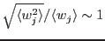

XMM-Newton Science Analysis System
evigweight (evigweight-1.7) [xmmsas_20170112_1337-16.0.0]
Advantages: exact, easy to use (only one ARF), can deal with any
complex spatial variation of the source.
Drawbacks: degradation of the statistical quality:
from Eq.5 and
6.
This is not a problem if the effective area is not varying much in the
region considered
(
).
XMM-Newton SOC/SSC -- 2017-01-12